Project Overview
The doctor consultation feature on Medigo makes it easy for users to connect directly with experienced, specialized doctors for real-time medical advice and support. Whether they have questions about symptoms, need guidance on treatment options, or simply want a second opinion, users can access trusted healthcare professionals anytime, anywhere.
Follow these steps to consult a doctor:
- Select a Doctor
Choose from a wide range of specialists—such as internal medicine, pediatrics, surgery, and more—with detailed profiles, experience, and user reviews. - Pay with MoMo E-Wallet
After selecting a doctor, complete your payment quickly and securely via the MoMo e-wallet, right within the app. - Connect with a Doctor
The system will automatically match you with your selected doctor or the most suitable available specialist. - View Consultation History
Talk to the doctor via chat or video call. Receive real-time medical advice, prescriptions, test requests, and care instructions—all stored in-app. - Start the Consultation
Easily access and manage all past consultations and health records for long-term tracking and better health management. - Rate and Give Feedback
After each session, leave a rating and comment to help improve service quality and guide other users in choosing a doctor.
Metrics Collected
The current doctor consultation booking flow on Medigo:
Once users select a suitable doctor, they proceed with payment via e-wallet. Afterward, the system will connect them with an available doctor. In cases where the system cannot establish a connection with a doctor within the designated time, it automatically refunds the payment to the user’s e-wallet.
After launching this feature and reviewing order data, we noticed that the refund rate reached 22.25% in Q2.
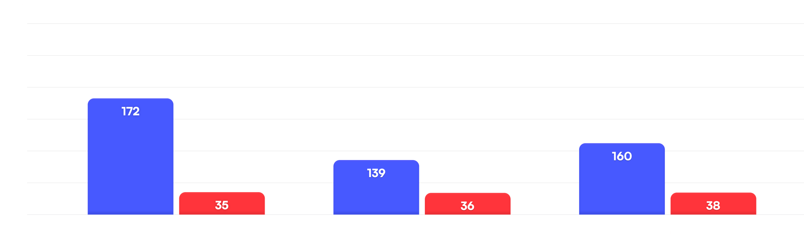
Doctor consultation volume in Q2
Successful Consultations
Cancelled Consultations
What are the possible reasons for this?
- The doctor the user wants to consult is currently unavailable.
- No available doctors at the time requested by the user.
- System error.
- There are also some additional reasons.
So, what are the solutions?
How to solve the problem?
Our proposed solution allows users to purchase consultation credits. Users can buy either a single credit or multiple credits depending on their needs, paying directly through an e-wallet.
Once a credit is purchased, the system will use one consultation credit to begin searching for a suitable doctor. If no doctor is available, the user's consultation credit remains intact for future use. All purchased consultation credits are stored, and users can easily track their remaining credits in the Medigo app.
Benefits for Medigo Users:
- Increased flexibility and convenience
Allowing users to purchase multiple consultation credits based on their needs gives them greater control over their healthcare services. This solution also reduces waiting time during checkout since the consultation credit has already been pre-purchased. - Higher user retention
When users have available credits ready to use, they are more likely to return to the Medigo app. This approach not only increases the frequency of use but also strengthens their long-term connection with the app.
User Flow
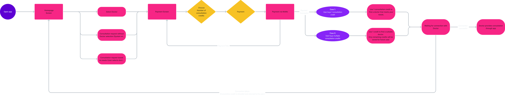
Visual Design
Here are some of the final design screens that we share
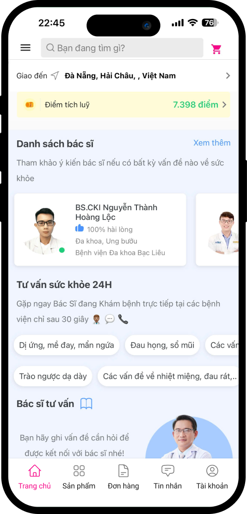
 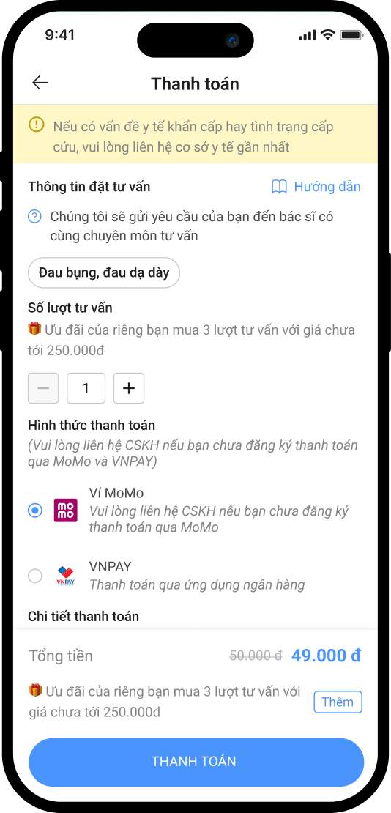
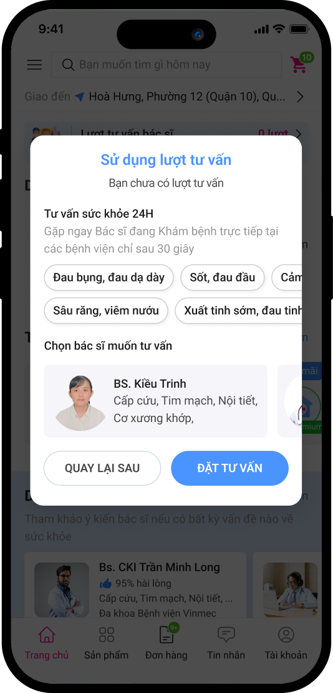
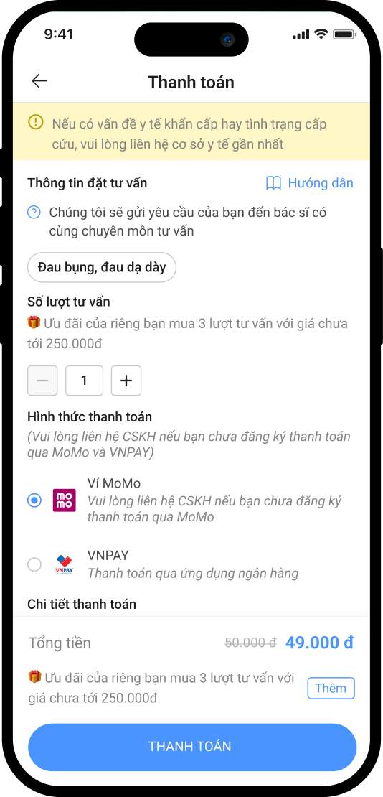
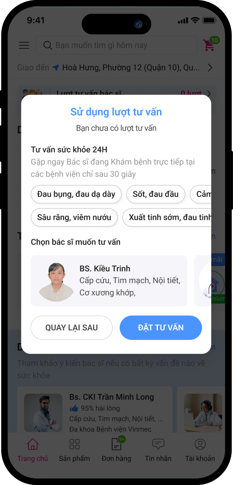
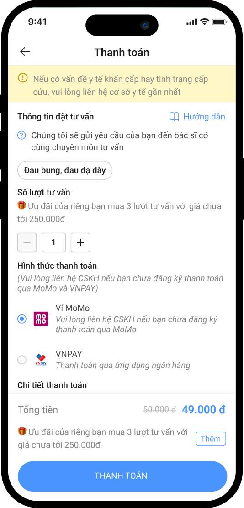
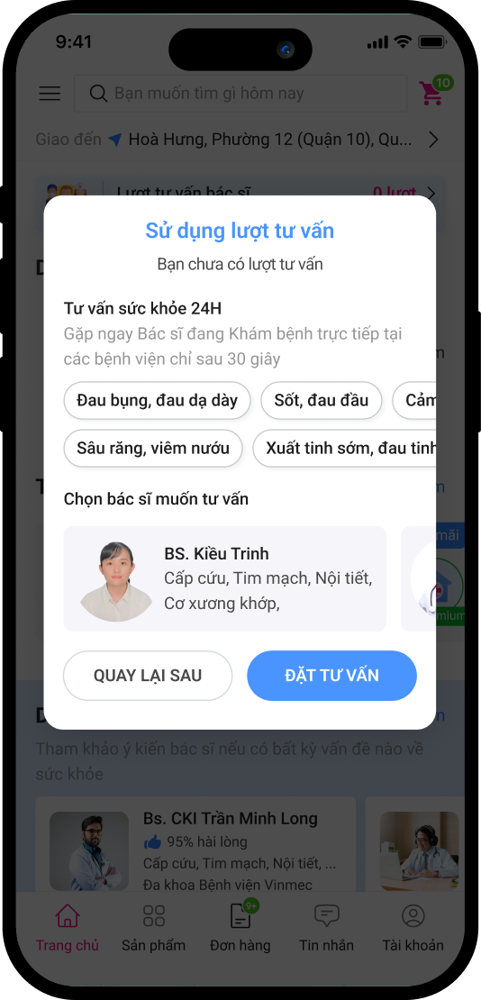
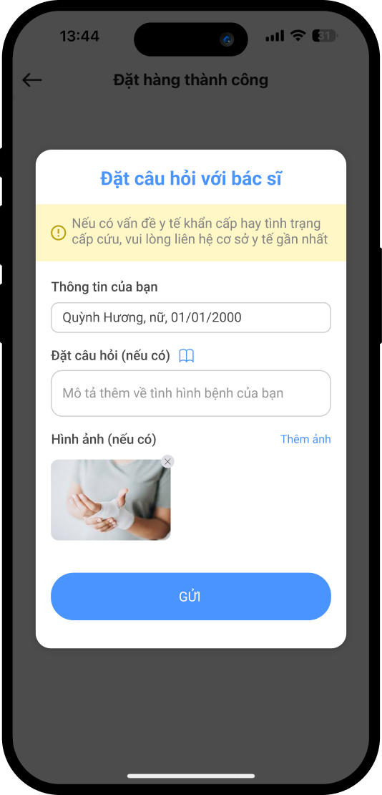
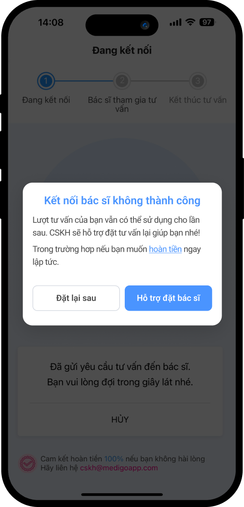
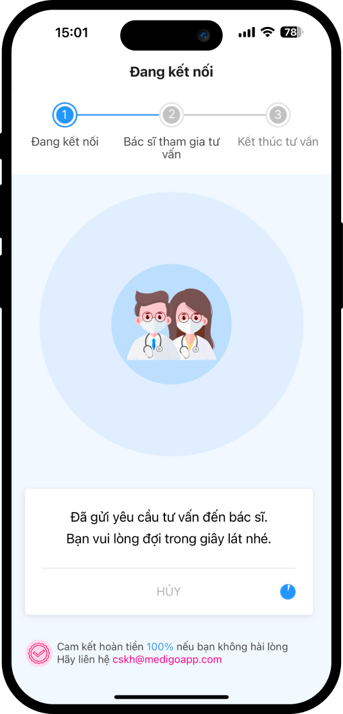
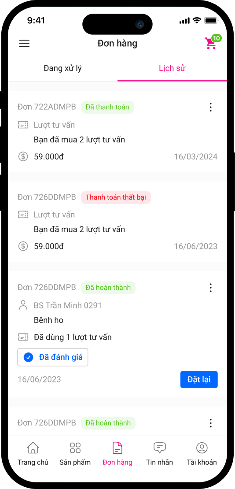
Monitoring and Evaluation of feature implementation
Results of feature implementation:
Before implementation, the refund rate in Q2 was 22.25%. After applying the new feature in Q3, this rate significantly dropped to 10.24%, meeting the targeted objective.
Additionally, the success rate of doctor consultation bookings increased by 8%, from 81.8% to 89.8%, demonstrating a considerable improvement in connecting users with specialized doctors.
Detailed metrics in Q3:
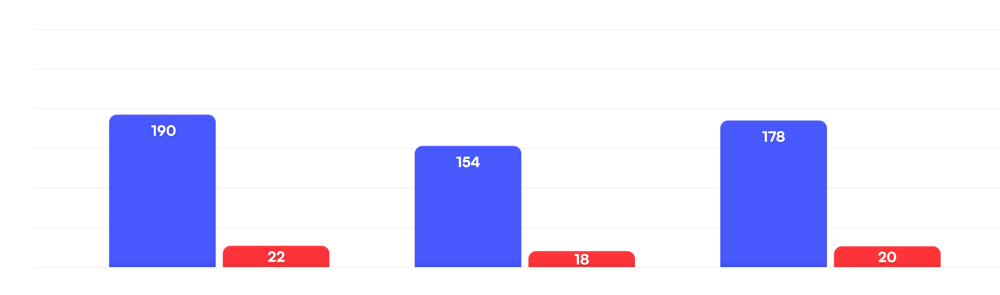
Doctor consultation volume in Q3
Successful Consultations
Cancelled Consultations
Potential Risks
- Users purchasing consultation sessions but not utilizing them:
Solution: We will send periodic reminders through the app, encouraging users to return and use their remaining consultation credits. This ensures they do not miss opportunities for healthcare consultations. - Solution: Conduct surveys to assess the quality of consultations, gathering feedback from users after each session to improve the service. This feedback will help enhance care quality and ensure user satisfaction.